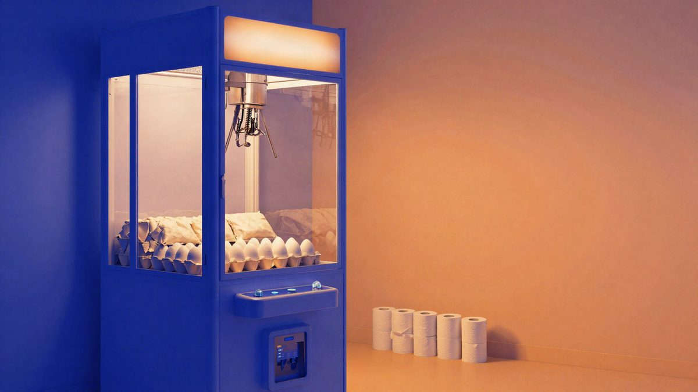

Japanski arkadni automati umjesto plišanaca nude jaja, rižu i toaletni papir

Veliki zabavni centri u Tokiju i okolici u automatima s hvataljkom umjesto plišanaca sada nude jaja, rižu, toaletni papir i deterdžent. Jedna igra na pojedinim automatima stoji sto jena, oko pola eura, a razlog je rast cijena koji u Japanu traje već 61 mjesec.
Neki veliki zabavni centri u Tokiju i okolici zamijenili su plišane igračke u automatima s hvataljkom proizvodima iz svakodnevne kupnje. Nagrade su sada jaja, riža, toaletni papir, deterdžent za rublje i grickalice. Cilj je spojiti kupnju i zabavu, pa igrač za mali iznos može osvojiti nešto što bi inače kupio u trgovini.
Na pojedinim automatima jedna igra stoji 100 jena (oko 0,55 eura). Mediji pišu da su uz malo sreće dvije igre dovoljne za paket toaletnog papira. Operateri se nadaju da će zabavni format učiniti kupnju potrepština zanimljivijom i privući nove posjetitelje.
Tržište nagradnih igara raste
Japansko tržište nagradnih igara doseglo je 2024. godine 417,7 milijardi jena (oko 2,4 milijarde eura). To je više nego dvostruko u odnosu na prije deset godina.
Cijene rastu već gotovo pet godina
Pozadina je dugotrajan rast troškova života. Prema javno dostupnim podacima, cijene u Japanu rastu iz godine u godinu već 61 mjesec. temeljna inflacija u rujnu je bila 2,1 posto na godišnjoj razini, prvi put nakon devet mjeseci iznad cilja Banke Japana od 2 posto.
Očekuje se da će 2026. poskupjeti ukupno 20.187 prehrambenih proizvoda, što je druga godina zaredom s više od 20.000 poskupljenja.
Analitičari vide tri glavna razloga:
- snažno slabljenje jena poskupljuje uvoznu energiju i hranu, a to se brzo prenosi na maloprodajne cijene,
- plaće su na proljetnim pregovorima 2026. u prosjeku porasle za više od 5 posto, ali cijene i dalje rastu brže od nominalnih plaća, pa tvrtke troškove rada prebacuju na potrošače,
- napetosti na Bliskom istoku podižu svjetske cijene sirovina, a postupno ukidanje državnih subvencija za struju i plin dodatno pojačava stvarni pritisak inflacije.
Izvor: MyDrivers (快科技)
Povezani članci
- Rockstar je u GTA VI uložio oko milijardu dolara i proširio tim na 4.711 ljudi16. listopada 2026.
 Prodao tri iPhonea 18 Pro Max na Xianyuu, zarada oko 300 eura, a banka mu je zamrznula račune7. studenoga 2026.
Prodao tri iPhonea 18 Pro Max na Xianyuu, zarada oko 300 eura, a banka mu je zamrznula račune7. studenoga 2026. U SAD-u je nestao kamion sa šest paleta Nvidia GPU-a vrijednih 11,4 milijuna dolara6. studenoga 2026.
U SAD-u je nestao kamion sa šest paleta Nvidia GPU-a vrijednih 11,4 milijuna dolara6. studenoga 2026.